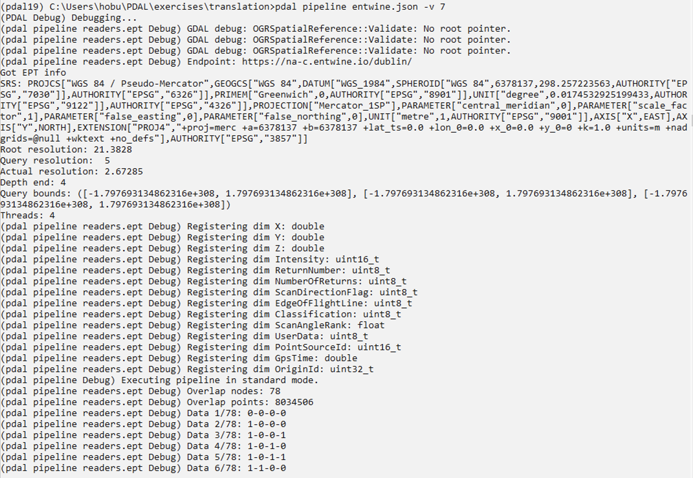
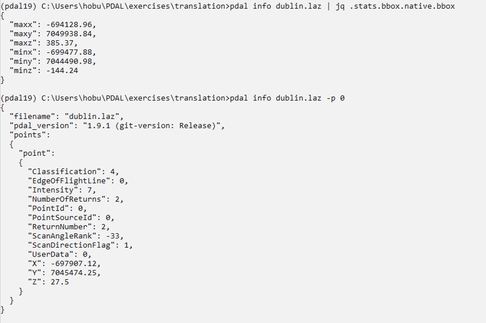

Entwine¶
Exercise¶
This exercise uses PDAL to fetch data from an Entwine index stored in an Amazon Web Services object store (bucket). Entwine is a point cloud indexing strategy, which rearranges points into a lossless octree structure known as EPT, for Entwine Point Tiles. The structure is described here: https://entwine.io/entwine-point-tile.html.
EPT indexes can be used for visualisation as well as analysis and data manipulation at any scale.
Examples of Entwine usage can be found from very fine photogrammetric surveys to continental scale lidar management.
US Geological Survey (USGS) example data is here: https://usgs.entwine.io/
- We will use a sample data set from Dublin, Ireland
- http://potree.entwine.io/data/view.html?r=%22http://na-c.entwine.io/dublin/ept.json%22
View the
entwine.jsonfile in your editor. If the file does not exist, create it and paste the following JSON into it:{ "pipeline": [ { "type": "readers.ept", "filename":"https://na-c.entwine.io/dublin/", "resolution": 5 }, { "type": "writers.las", "compression": "true", "minor_version": "2", "dataformat_id": "0", "filename":"dublin.laz" } ] }
Note
If you use the Developer Console when visiting http://speck.ly or http://potree.entwine.io, you can see the browser making requests against the EPT resource at http://na-c.entwine.io/dublin/ept.json
Issue the following command in your Conda Shell.
pdal pipeline ./excercises/translation/entwine.json -v 7
{kind=link}
Verify that the data look ok:
pdal info dublin.laz | jq .stats.bbox.native.bbox pdal info dublin.laz -p 0
Visualize the data in http://plas.io

{kind=link}
Notes¶
- readers.ept contains more detailed documentation about how to use PDAL’s EPT reader .